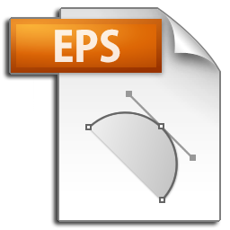

Sobre o Mapa
O Mapa das Organizações da Sociedade Civil (OSCs), ou simplesmente Mapa das OSCs, é uma plataforma virtual de transparência pública colaborativa com dados das OSCs de todo o Brasil. Tem como objetivos principais:
- dar transparência à atuação das OSCs, principalmente ações executadas em parceria com a administração pública;
- informar mais e melhor sobre a importância e diversidade de projetos e atividades conduzidas por essas organizações;
- disponibilizar dados e fomentar pesquisas sobre OSCs; e
- poiar os gestores públicos a tomarem decisões sobre políticas públicas que já têm ou possam ter interface com OSCs.
Criado a partir do
Decreto 8.726/2016 , que regulamenta a
Lei 13.019/2014
, que regulamenta a
Lei 13.019/2014 – conhecida como Marco Regulatório das OSCs – o Mapa é gerido pelo Instituto de Pesquisa Econômica Aplicada (IPEA). Ele integra um amplo e crescente volume de base de dados oficiais, provenientes de fontes públicas e privadas, atualizadas constantemente. É alimentado ainda por informações enviadas diretamente pelas OSCs e por entes federados, em um grande processo colaborativo.
– conhecida como Marco Regulatório das OSCs – o Mapa é gerido pelo Instituto de Pesquisa Econômica Aplicada (IPEA). Ele integra um amplo e crescente volume de base de dados oficiais, provenientes de fontes públicas e privadas, atualizadas constantemente. É alimentado ainda por informações enviadas diretamente pelas OSCs e por entes federados, em um grande processo colaborativo.
As vantagens do Mapa são múltiplas:
- Para as OSCs: fornece um ambiente confiável, público e gratuito, desenvolvido em software livre e com códigos abertos, para presença institucional da entidade na Internet. Seus representantes podem inserir informações em páginas individuais, mantendo um perfil completo e atualizado da Organização, para a visualização dos interessados.
- Para os administradores e gestores públicos: propõe uma parceria sólida a fim de dar transparência às ações de repasse de verba e visibilidade ao acesso de informação sobre o uso de recursos públicos, principalmente. Serve ainda como ferramenta para planejamento governamental, com estatísticas, índices e indicadores para cada um das regiões, Estados e municípios brasileiros. E ainda: os governos podem aumentar a transparência de suas práticas e, seguindo algumas orientações
 (PDF 285KB), encaminhar dados sobre as parcerias celebradas com as OSCs para que sejam visualizadas no Mapa por todos.
(PDF 285KB), encaminhar dados sobre as parcerias celebradas com as OSCs para que sejam visualizadas no Mapa por todos. - Para pesquisadores: encurta e facilita o caminho na busca e na obtenção de base de dados em análises com uso de métodos quantitativos e/ou qualitativos. Além disso, oferece bases oficiais limpas para usos múltiplos, de maneira rápida, gratuita e com sofisticação analítica associada ao georreferenciamento.
- Para o público em geral: possibilita o conhecimento das mais diferentes ações envolvendo OSCs e governos Federal, Estadual e Municipal.
Identidade do Mapa
Para garantir a credibilidade, a identidade e o reconhecimento do Mapa das OSCs, foi desenvolvido um pacote gráfico, composto por logomarca, símbolos e demais elementos visuais. O objetivo é consolidar a “marca” Mapa e garantir sua integridade e coesão nos mais variados ambientes e aplicações. Todas as normas, diretrizes e orientações para o uso desses recursos constam no nosso Manual de identidade visual.
-
Manual de Identidade Visual
Neste documento, encontram-se as orientações de como utilizar a nossa marca.
Baixar o Manual de Identidade Visual do Mapa das OSCs - PDF (11.1 MB)
-
Logo na Versão Horizontal
Logo no formato EPS.
Baixar o logo na versão horizontal - EPS (2.76 MB)Logo no formato PNG.
 Baixar o logo na versão horizontal - PNG (24 KB)
Baixar o logo na versão horizontal - PNG (24 KB)
-
Pacote Completo
No arquivo abaixo, encontram-se todas as versões da marca do Mapa das OSCs para ajudar e facilitar a consolidação da mesma sem discrepâncias. O pacote possui:
- Facas para impressão, dos cartões, folders, envelopes, relatórios, papel timbrado etc.
- Artes para Facebook, capa e postagens em imagens e arquivos para edição.
- Wallpaper.
- Imagens da logomarca já exportadas em JPG e PNG.
- HTML da assinatura de e-mail e newsletter para facilitar a edição.
- Formatos (AI, EPS, PSD, JPG e PNG).
Baixar o pacote completo da identidade visual do Mapa das OSCs - ZIP (43.2 MB)